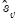
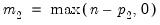

The Engle-Granger and Phillips-Ouliaris residual-based tests for cointegration are simply unit root tests applied to the residuals obtained from SOLS estimation of Equation (28.1). Under the assumption that the series are
not cointegrated,
all linear combinations of

, including the residuals from SOLS, are unit root nonstationary. Therefore, a test of the
null hypothesis of no cointegration against the
alternative of cointegration corresponds to a unit root test of the null of nonstationarity against the alternative of stationarity.
We consider the two standard ADF test statistics, one based on the t-statistic for testing the null hypothesis of nonstationarity and the other based directly on the normalized autocorrelation coefficient :
(Stock 1986, Hayashi 2000). There is a practical question as to whether the standard error estimate in Equation (28.19) should employ a degree-of-freedom correction. Following common usage, EViews standalone unit root tests and the Engle-Granger cointegration tests both use the d.f.-corrected estimated standard error , with the latter test offering an option to turn off the correction.
To perform the Engle-Granger test, open an estimated equation and select select in the dropdown. The dialog will change to display the options for this specifying the number

of augmenting lags in the ADF regression.
By default, EViews uses automatic lag-length selection using the Schwarz information criterion. The default number of lags is the observation-based rule given in Equation (28.16). Alternately you may specify a lag-length, select a different information criterion (, , , , or ), or specify sequential testing of the highest order lag using a
t-statistic and specified
p-value threshold. For our purposes the default settings suffice so simply click on .
As to the tests themselves, the Engle-Granger tau-statistic (t-statistic and normalized autocorrelation coefficient (which we term the
z-statistic) both reject the null hypothesis of no cointegration (unit root in the residuals) at the 5% level. In addition, the tau-statistic rejects at a 1% significance level. On balance, the evidence clearly suggests that LC and LY are cointegrated.
The dialog changes to show a single button for controlling the estimation of the long-run variance

and the strict one-sided long-run variance

. The default settings instruct EViews to compute these long-run variances using a non-prewhitened Bartlett kernel estimator with a fixed Newey-West bandwidth. To change these settings, click on the button and fill out the dialog. Since the default settings are sufficient for our needs, simply click on the button to compute the test statistics.
There are a couple of new results. The “Bias corrected Rho - 1” reports the estimated value of Equation (28.21) and the “Rho* S.E.” corresponds to
Equation (28.23). The “Long-run residual variance” and “Long-run residual autocovariance” are the estimates of and , respectively. It is worth noting that the ratio of to the S.E. of the regression, which is a measure of the amount of residual autocorrelation in the long-run variance, is the scaling factor used in adjusting the raw
t-statistic to form tau.
Suppose we estimate equation Equation (28.1) where, to simplify, we let

consist solely of powers of trend up to order

. Then the Park test estimates the spurious regression model including from

to

spurious powers of trend


is simply the number of cointegrating variables (including the dependent) in the system, but the value must generally account for deterministic trend terms in the system that are excluded from the cointegrating equation.
Alternately, you may compute the Phillips-Ouliaris test statistic. Simply select View/Cointegration and choose Phillips-Ouliaris in the Test Method dropdown.The dialog changes to show a single Options button for controlling the estimation of the long-run varianceis nonstandard and depends on , the number of cointegrating regressors less the number of deterministic trend regressors excluded from the cointegrating equation, and
the number of trending regressors in the system. Hansen (1992) has tabulated simulation results and provided polynomial functions allowing for computation of p-values for various values of and
. When computing p-values, EViews ignores the presence of user-specified deterministic regressors in your equation.
There are no options for the Hansen test so you may simply click on View/Cointegration Tests..., select Hansen Instability in the dropdown menu, then click on OK.The results are displayed below. The test statistic value of 0.5755 is presented in the first column. The next three columns describe the trends that determine the asymptotic distribution. Here there is a single stochastic regressor (LY) and one deterministic trend (@TREND) in the cointegrating equation, and no additional trends in the regressors equations. Lastly, we see from the final column that the Hansen test does not reject the null hypothesis that the series are cointegrated at conventional levels, though the relatively low p-value are cause for some concern, given the Engle-Granger and Phillips-Ouliaris results.Suppose we estimate equation Equation (28.1) where, to simplify, we let -lag augmented regression of the form
-lag augmented regression of the form should increase to infinity with the (zero-lag) sample size
should increase to infinity with the (zero-lag) sample size  but at a rate slower than
but at a rate slower than  .
. by running the unaugmented Dickey-Fuller regression
by running the unaugmented Dickey-Fuller regression and the strict one-sided long-run variance
and the strict one-sided long-run variance  of the residuals. By default, EViews d.f.-corrects the estimates of both long-run variances, but the correction may be turned off. (The d.f. correction employed in the Phillips-Ouliaris test differs slightly from the ones in FMOLS and CCR estimation since the former applies to the estimators of both long-run variances, while the latter apply only to the estimate of the conditional long-run variance).
of the residuals. By default, EViews d.f.-corrects the estimates of both long-run variances, but the correction may be turned off. (The d.f. correction employed in the Phillips-Ouliaris test differs slightly from the ones in FMOLS and CCR estimation since the former applies to the estimators of both long-run variances, while the latter apply only to the estimate of the conditional long-run variance). and
and  statistics are non-standard and depend on the deterministic regressors specification, so that critical values for the statistics are obtained from simulation results. Note that the dependence on the deterministics occurs despite the fact that the auxiliary regressions themselves exclude the deterministics (since those terms have already been removed from the residuals). In addition, the critical values for the ADF and PP test statistics must account for the fact that the residuals used in the tests depend upon estimated coefficients.
statistics are non-standard and depend on the deterministic regressors specification, so that critical values for the statistics are obtained from simulation results. Note that the dependence on the deterministics occurs despite the fact that the auxiliary regressions themselves exclude the deterministics (since those terms have already been removed from the residuals). In addition, the critical values for the ADF and PP test statistics must account for the fact that the residuals used in the tests depend upon estimated coefficients. from 1 to 12. (Recall that
from 1 to 12. (Recall that  is the number of cointegrating regressors less the number of deterministic trend regressors excluded from the cointegrating equation.) When computing critical values, EViews will ignore the presence of any user-specified deterministic regressors since corresponding simulation results are not available. Furthermore, results for will be used for cases that exceed that value.
is the number of cointegrating regressors less the number of deterministic trend regressors excluded from the cointegrating equation.) When computing critical values, EViews will ignore the presence of any user-specified deterministic regressors since corresponding simulation results are not available. Furthermore, results for will be used for cases that exceed that value. statistic examines time-variation in the scores from the estimated equation. Let be the vector of estimated individual score contributions from the estimated equation, and define the partial sums,
statistic examines time-variation in the scores from the estimated equation. Let be the vector of estimated individual score contributions from the estimated equation, and define the partial sums, is
is and
and  may be defined analogously to least squares for CCR using the transformed data. For DOLS
may be defined analogously to least squares for CCR using the transformed data. For DOLS  is defined for the subset of original regressors
is defined for the subset of original regressors  , and
, and  may be computed using the method employed in computing the original coefficient standard errors.
may be computed using the method employed in computing the original coefficient standard errors. test is an added variable test. The test is computed by testing for the significance of spurious time trends in a cointegrating equation estimated using one of the methods described above.
test is an added variable test. The test is computed by testing for the significance of spurious time trends in a cointegrating equation estimated using one of the methods described above. . Under the maintained hypothesis that the original specification of the cointegrating equation is correct, the resulting test statistic is asymptotically .
. Under the maintained hypothesis that the original specification of the cointegrating equation is correct, the resulting test statistic is asymptotically .